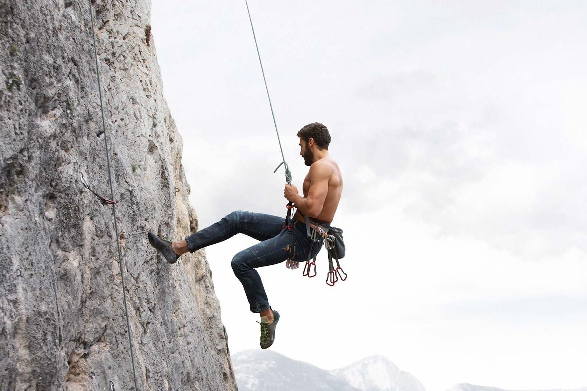

Pierce Lee Sheldon
Hobbies & Interests

I enjoy rock climbing because of the strength and discipline that it builds.

I enjoy bird hunting with my dog Willie Nelson. Working with an animal helps strengthen communication, trust and teamwork.

I enjoy playing video games to relax and recharge. They also help improve coordination, reaction time, and cognitive processing.
I value spending time in faith through reading and reflection, which helps guide my personal growth and discipline.